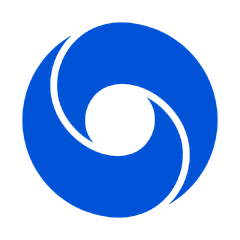

8月10日 GitHub 日榜
天气模型
大厂居然开源
#01
大厂科研·天气
AI预测天气
google-deepmind / weathernext

AI 推算全球中期天气与台风路径 · 代码开源
Python
天气预报
大气科学
开源
AI 直接推算
台风路径
代码开源
大厂科研也上 Trending
| 00| 25| 50| 75| 99
#02
手机遥控·编程
手机遥控AI
pingdotgg / t3code
手机网页桌面端远程指挥电脑里的 AI 编程智能体
TypeScript
远程控制
AI编程
多端通用
出门手机接手
远程指挥
多端通用
相当于给 AI 配了个遥控器
#03
知识图谱·读码
AI读懂代码库
vitali87 / code-graph-rag

用 AI 与知识图谱查询理解编辑多语言代码库
Python
知识图谱
代码分析
MCP
建成知识图谱
跨文件理清
看懂全貌
给开发者看懂整个代码库的助手
#04
节点式·AI画图
节点式AI画图
Comfy-Org / ComfyUI

模块化扩散模型图形界面 · 拖拽节点搭工作流
Python
节点编辑
AI画图
工作流
节点拖拽
搭工作流
十二万星
十二万人用脚投票
这四个你会用上哪个
关注 GitHub 星探 · 每天热门开源见
下期见